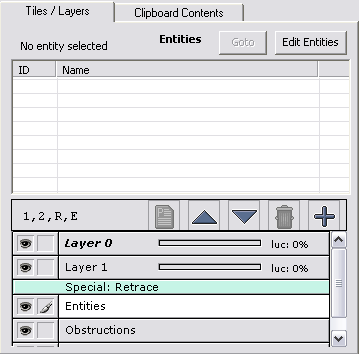
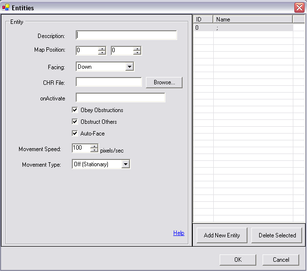
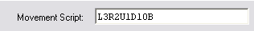
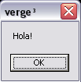
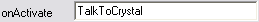

Chapter 3:
Entities; Populating your world
Entities:
As stated above "Entities" are the sprites that you put on your map for your player to interact with
in a variety of ways.
The difference between an "entity" and a "sprite" is that when we refer to a "sprite" we are just talking
about what it looks like and how it animates. An entity, has a few properties that designate how the sprite
behaves when it is on a map. This means that there are a few options that we can assign to an entity, that affect
a variety of its characteristics. We'll go into much more detail regarding an entities properties, but let's first look
at how we can place one on a map.
Methods for Placing Entities:
There are two ways that you can place an entity on your map. The first way would be to code it in your maps
.vc file, (like how we place "darin.chr" on our tutorial map with EntitySpawn()), and assign its properties
using VergeC's built-in variables. Normally we wouldn't use this method, as it is long, and ultimately
far more complicated than the method I am about to introduce. However, there are a few circumstances where this is
the desirable method.
The other method, and the one we'll use, is to place it on your map using the map editor.
Maped3: Adding Entities
The first step to adding an entity is to first create one. We do this by clicking on the "Entities Layer" in maped3. Notice
the highlighted section in the image.
Above the layer list, is a button that says "Edit Entities". Click it now, and a new window will open. At the bottom, click
"Add New Entity". The once greyed areas now become available to edit.

These are all the properties we can assign to an entity. By adding/changing values we determine how the entity will function. Let's take a look
at all the properties one at a time.
-
Description:
This is basically for you to remember what significance the entity has. If the entity we were placing was a Shopkeeper, we'd probably
put Shopkeeper in the box, just so we knew what the entity's purpose was. The engine pays no attention to this line.
- Map Position:
These are the X and Y co-ordinates that entity will first appear on when the map is loaded. We can set these values manually here, or, after
filling out the rest of the properties, choose it from the list that appears after clicking the Entity Layer, and setting it by pointing to a tile
on the map. Remember, entities will spawn using 16x16 tiles as a reference point. Thus, if X was 5, and Y was 5, the entity would be appear
5 tiles to the right, and 5 tiles down.
- Facing:
This determines which way the entity will be facing once the map is loaded. If we set this to "Down" the entity will face down. If we
set this to "Up", the entity will face up, etc. etc.
- CHR File:
This is where we tell the engine what sprite (".chr" file) this entity will use. We can either put this in manually, or we can browse our hard drive
for it.
- onActivate:
This tells the engine which script in the map's ".vc" file to call when this entity is activated.
You will see this in action shortly.
- Obey Obstructions:
This sets whether or not the entity will be blocked if it tries to walk through an obstruction. For example: If we had
a ghost character with the ability to walk through walls, we would uncheck this box, and the ghost would have
the ability to walk through any obstruction on the map.
- Obstruct Others:
This determines if the entity will obstruct other entities on the map. If this is unchecked, all entities will be able to walk through
the one we are placing now.
- Auto-Face:
It's pretty rude if a person doesn't look at you while talking to you. ~_^ This option, when checked, makes the entity face the player
character when he/she activates it. For example: If you approached a townsperson from the side, and it was facing down, then you activated
it by pressing the action key on your keyboard/game pad, it will turn and face the player entity.
- Movement Speed:
This determines how quickly the entity will move on the screen. 100pixels/sec is the default; a number higher than that will make it move faster,
while a number lower will make it move slower.
- Movement Type:
This determines how the entity will move, if at all.
Types of Movement that you can choose from:
- Off(Stationary): The entity will not move.
- Wander Zone: The entity will wander around the map, aimlessly. The "Wander Delay" option,
determines how long of a pause there is when the entity pauses before continuing to wander. It is measured in
1/100ths of a second.
- Wander Rectangle: Similar to the Wander Zone, the entity will wander around aimlessly only it is limited to
how far it's allowed to go. You decide those values using the x1,y1,x2 and y2 variables. If we had it set up so that
x1 = 5, y1 = 0, x2=20, y2=10, then the entity could never reach a tile that was less than 5 tiles to its left, greater than 20 tiles to its right,
less than 0 tiles moving up, or greater than 10 tiles moving down the map. The wander delay in this option serves the same purpose.
- Movement Script: The movescript gives you the ability to tell the entity exactly how to move. There is a special code for writing this and it is
exactly the same as using the EntityMove() function when you code. I'll show an example, then explain what we've told it to do.

First we said "L3". This is telling the entity to move Left 3 tiles.
We then put "R2". Here we're telling the entity to then move Right 2 tiles.
Next we put "U1". This tells the entity to move Up 1 tile.
We then put "D10", which tells the entity to move Down 10 tiles.
Finally, we said "B", which tells the entity to go back to beginning of the movement script and repeat
what it's just done.
There are other codes we can use to do a few other things. These are "W", "F" and "Z".
- W tells the entity to wait, for how long we tell it to, before moving on to it's next call. It is counted in 1/100ths of a second. So, if we were to say:
"R4W100D3", the entity would move Right 4 tiles, then wait for one whole second (if you remember fractions, 100/100 = 1 whole) before moving Down 3 tiles.
- F tells the entity to face a certain direction. By default, if you use the ".mak" file that comes with the engine download to create your CHR's, "F0" will face Down, "F1" will face Up,
"F2" will face left and "F3" will make the entity face right.
- Z represents a "special frame". This means that we can tell the entity to show *any* frame that we want it to. For example:
If in our movescript we want an entity to move to a certain spot then act "surprised", and we had a frame in ".chr" that showed our character
surprised we could use "Z" to call that frame, to show that our entity is surprised. If that frame were the 20th frame in our ".chr" file, we would say:
"Z20", and that will display on screen, the Frame number 20 in our ".chr" file.
It should also be pointed out that until we call "Z0", our entity will be stuck on the frame we have chosen to display. This means that the entity will
*not* animate properly even if we told it to move "R3". We would first call "Z0" and then "R3".
*Phew* that was a lot to take in. Well, it just seems like a lot because you're just learning. This stuff becomes second nature real quick, so don't worry. :)
With this new found information, let's add "Crystal" to the map. Follow the steps and create a new entity. For it's CHR file, browse for "crystal.chr", and do whatever you
like to its properties (but leave onActivate blank, we'll do something next for that). It will appear as a yellow block in the map editor, with a number on it.
Save the map, and run verge.exe to see Crystal now on the map. Play around with the different
options and see first hand what changing things will do to its behaviour. Use the tileset and add some trees or a house, and lay some obstructions down, etc. Experiment! And when
you're content, move on to the next section.
Giving the entity meaning to its existence:
It's all fine and dandy that we have another person in our world now, but unless we give it *some* reason to be there (other than to fill space)
she's pretty pointless. ~_^ So let's give her something to do.
We won't be adding any fancy way for her to talk to you just yet. The goal is to teach you how
to make it so when you have a textbox function, you can use it to make her talk to you. In the mean time, we'll use another built-in function to
cheat, and mimic her talking to you. Fire up "tutorial.vc" and add these lines:
void TalkToCrystal()
{
MessageBox("Hola!");
}
Let's recap. We created a new script "void TalkToCrystal()", which makes a call to the built-in function "MessageBox()" and carries out what we tell it to do.
In this case, when we call "MessageBox()" a small window will pop-up displaying any message we tell it to. So for us it will say "Hola!", and give you an "OK" button
to push. It's kind of like the "Exit()" function we called way in the beginning, only in this case, after clicking "OK", the box will disappear and return you to your game.
Of course this action won't carry out unless we tell the entity that it's activation script is "TalkToCrystal", the script we just created. So, get back to the entities screen in maped3,
select crystal's entity, and in the box that says "onActivation", put "TalkToCrystal". Save your map.

Now when we run our game, and activate Crystal, the message box will appear that says "Hola!", like the image above. How do you activate Crystal? By moving your player sprite up to her and pressing the
"activation key". By default this is Enter. Try it out!
To Summarize, this is what you now know:
- How to create a new entity and place it on a map
- What it's properties are, and how it affects the behaviour of the entity
- How to manipulate its movement, and what movement scripts are.
- Finally, how to make it call a script when it is activated.
Table Of Contents
Chapter 4: Zones; Where, What and How?